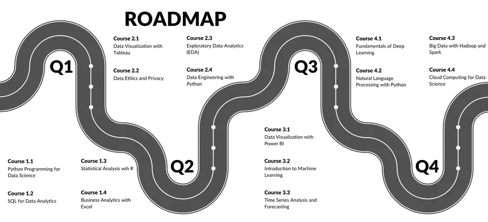

Overview
The most comprehensive learning journey offered by Data Science Academia — a structured, mentor-guided 12-month programme that takes you from complete beginner to a job-ready AI and Data Science professional. Mapped across four quarters, each quarter builds on the last — from Python and SQL foundations through business analytics, data engineering, machine learning, deep learning, NLP, and cloud computing. Every quarter concludes with a capstone project, and graduates receive a full portfolio, internship certificate, and placement assistance.
The track covers 16 courses across four quarters with three live sessions a week (recorded for replay), a dedicated mentor with weekly 1-on-1 check-ins and quarterly offline bootcamps in Chennai. Each quarter ends with a capstone project. Graduates receive the DSA AI Mastery Certificate, a bundled internship certificate and placement assistance, with optional guidance for the Microsoft Azure AI-900 and DP-900 certifications.
Your 12-month learning journey
Foundations of Data Science
- Python for data pipelines
- SQL for business queries
- Statistical analysis with R
- Excel dashboards & reporting
Data Engineering & Analytics
- Tableau interactive dashboards
- Exploratory data analysis
- Data ethics & privacy
- ETL pipelines with Python
Machine Learning & BI
- Power BI enterprise reports
- Supervised & unsupervised ML
- Time-series forecasting
- Portfolio & interview prep begins
Advanced AI & Cloud
- Deep learning & Transformers
- NLP with Python & LLMs
- Big data with Spark
- AWS & Azure deployment

What you'll gain
- Complete command of Python, SQL, R, and Excel for data roles
- Professional-grade skills in ML, Deep Learning, NLP, and Cloud
- Industry portfolio with 4 capstone projects (one per quarter)
- DSA AI Mastery Certificate — recognised by hiring partners
- Internship certificate upon successful programme completion
- Placement assistance — resume review, mock interviews, LinkedIn
Programme Structure & Delivery
- 12 months divided into 4 focused quarters — each with a clear learning theme
- 3 live sessions per week (recorded for replay) + self-paced practice assignments
- Quarterly offline bootcamps in Chennai for immersive, hands-on project work
- Dedicated mentor — weekly 1-on-1 check-in to track progress and address doubts
- Peer cohort model — learn alongside a batch of motivated professionals
- Flexible pacing: catch-up sessions and recordings available for working professionals
Capstone Projects & Portfolio
- Q1 Capstone: End-to-end exploratory data analysis on a real business dataset
- Q2 Capstone: Build and present a full analytics dashboard from raw, unstructured data
- Q3 Capstone: Train, evaluate, and deploy a machine learning model on a live dataset
- Q4 Capstone: Full-stack AI system — data ingestion → model → deployed cloud API
- All 4 projects compiled into a professional GitHub portfolio with documentation
- Portfolio reviewed and endorsed by DSA faculty before placement assistance begins
Certification & Career Outcomes
- DSA AI Mastery Certificate issued on successful completion — recognised by hiring partners
- DSA Internship Certificate bundled with the track (no separate application needed)
- Placement assistance: resume writing, LinkedIn optimisation, and referral network
- Mock interview sessions (technical + HR) in the final quarter with feedback
- Alumni network access — job alerts, peer mentoring, and industry events
- Guidance for Microsoft Azure (AI-900 / DP-900) certification as an add-on
Who Should Enrol & Why
- Fresh graduates in engineering, science, or any discipline with an interest in AI
- Working professionals looking to pivot into data science or AI roles
- Students who want one structured path rather than stitching courses together
- Ideal if you want a portfolio, a certificate, mentorship, and placement support — all in one
- Not recommended if you are only looking for a single short course or a specific tool
- All backgrounds welcome — the programme starts from absolute basics in Q1
Technologies you'll master
What's included
Live + recorded sessions
3 live classes per week, every one recorded so you can replay any session at your own pace.
Dedicated mentor
Weekly 1-on-1 check-ins with a Ph.D.-qualified faculty mentor throughout all 12 months.
Project portfolio
4 capstone projects — one per quarter — compiled into a GitHub portfolio reviewed and endorsed by DSA faculty.
Dual certification
DSA AI Mastery Certificate plus a bundled Internship Certificate, both issued on successful completion.
Placement assistance
Resume review, LinkedIn optimisation, technical and HR mock interviews and access to the referral and alumni network.
Quarterly bootcamps
Offline intensive sessions in Chennai at the end of each quarter — hands-on, immersive and collaborative.
Eligibility & prerequisites
No prior programming or data science experience required. Basic computer literacy and a commitment to 10–12 hours of study per week is sufficient to succeed in this programme.
Not sure whether you are eligible? Ask us — we reply within one business day.